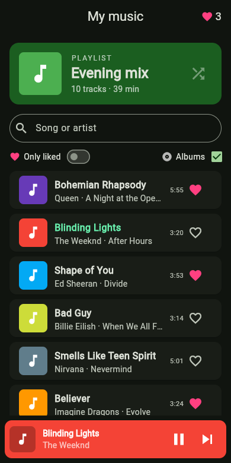
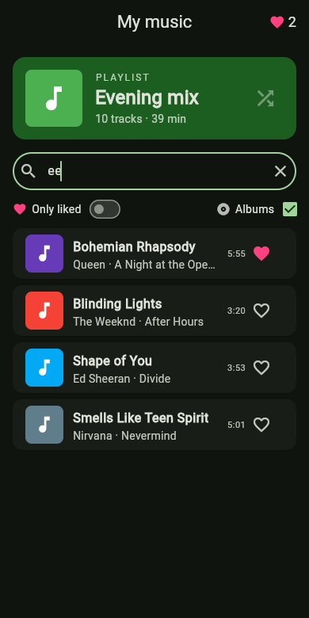
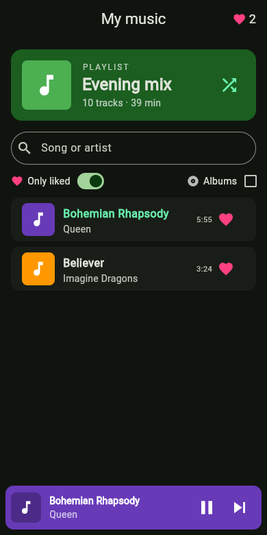

Музичний застосунок у темній темі: список треків, пошук, серця, «тільки улюблені», міні-плеєр знизу і «перемішати». Зібраний лише з того, що ми вже пройшли, плюс сьогоднішній ListView.builder. Біля кожного рядка є коментар: що він робить і навіщо він тут.


ee — лишилися треки, де ee є в назві або у виконавця. Хрестик очищає поле
lib/main.dart, Ctrl+S, hot restart, запуск flutter run -d chromequeen. Постав серце й увімкни Only liked. Зніми галочку AlbumsКод поділено на чотири частини: 1. Дані → 2. Застосунок → 3. Екран зі станом → 4. Малі віджети. У таблиці — кожен знайомий елемент: де він стоїть і що робить.
| Елемент | Що робить у плейлисті | Урок |
|---|---|---|
class Track | Трек — сутність: назва, виконавець, альбом, секунди, колір, серце | 8, 10 |
String? feat | Гість є лише в Uptown Funk, в інших треків тут null | 12 |
get time | Перетворює 200 секунд на 3:20 через ~/ і % | 14 |
List<Track> | Десять треків — дані для списку | 11 |
where | Пошук і «тільки улюблені» — дві умови разом | 6, 11 |
fold | Загальна тривалість у шапці: 39 min | 11 |
Random + do-while | «Перемішати»: наступний трек випадковий, але не той самий | 3 |
MaterialApp, ThemeData | Темна тема з зеленим відтінком | 17 |
Scaffold, AppBar | Каркас екрана, у шапці лічильник сердець (actions) | 17 |
Column, Row, SizedBox | Шапка → пошук → перемикачі → список; відступи між елементами | 18 |
Container + BoxDecoration | Обкладинки, шапка плейлиста й міні-плеєр із заокругленими кутами | 18 |
extends StatelessWidget | Власні віджети Cover, PlaylistHeader, TrackTile, MiniPlayer | 13, 19 |
StatefulWidget + setState | Екран памʼятає пошук, серця, що грає і чи пауза | 20 |
IconButton | Серце, ▶ / ⏸, «далі», 🔀 | 20 |
TextField + controller | Пошук: список фільтрується з кожною літерою (onChanged) | 21 |
Switch | Only liked — лише треки з серцем | 21 |
Checkbox + ?? | Albums — показувати альбом у підписі | 21 |
Умовний показ ? : | Міні-плеєр лише тоді, коли щось грає; «Nothing found»; хрестик у пошуку | 21 |
Expanded | Дає ListView усе місце, що лишилося в Column | 22 |
ListView.builder, Card, ListTile | Сам список: один рядок на трек | 22 |
VoidCallback — тип для дії, яку передаємо у віджет: «функція без параметрів, яка нічого не повертає». prefixIcon і suffixIcon — значки всередині поля. bottomNavigationBar — місце для міні-плеєра внизу Scaffold. SafeArea — щоб не заходити під «чубчик» телефона. TextOverflow.ellipsis — довгий текст закінчується на «…». Transform.scale — зменшує віджет: Switch на три чверті розміру.
// Застосунок «Плейлист» · урок 22 · Flutter 10 клас. // Усе вивчене в одному застосунку: клас і список обʼєктів, where і fold, null-safety, // геттери, власні віджети, StatefulWidget і setState, TextField, Switch, Checkbox, // умовний показ і сьогоднішній ListView.builder. // DartPad: заміни весь код цим і натисни Run. VS Code: заміни весь lib/main.dart, Ctrl+S, hot restart. // Як читати: зверху вниз — спершу ДАНІ, потім ЕКРАН зі станом, потім МАЛІ ВІДЖЕТИ. import 'dart:math'; // Random — для «перемішати» (урок 3) import 'package:flutter/material.dart'; void main() => runApp(const PlaylistApp()); // ═══════════════════════════ 1. ДАНІ ═══════════════════════════ // Трек — сутність -> class (урок 8). Це дані, не віджет: тут немає build. class Track { final String title; final String artist; final String? feat; // null-safety (урок 12): у більшості треків гостя немає -> null final String album; final int seconds; // тривалість у секундах — так легко рахувати суму final Color color; // колір «обкладинки» — картинок ще не було (урок 24) bool liked; // НЕ final: серце можна поставити й зняти // Перші пʼять — позиційні, feat і liked — іменовані зі значенням за замовчуванням (урок 10). Track(this.title, this.artist, this.album, this.seconds, this.color, {this.feat, this.liked = false}); // Геттер (урок 14): читаємо як поле — track.time, а рахується щоразу. // 200 секунд -> 200 ~/ 60 = 3 хвилини, 200 % 60 = 20 секунд -> '3:20'. // padLeft(2, '0') дописує нуль зліва: 5 -> '05', щоб було '3:05', а не '3:5'. String get time => '${seconds ~/ 60}:${(seconds % 60).toString().padLeft(2, '0')}'; // Виконавець разом із гостем, якщо гість є. String get artists => feat == null ? artist : '$artist feat. $feat'; } // ═══════════════════════════ 2. ЗАСТОСУНОК ═══════════════════════════ // Корінь: тема і перший екран. Стану немає -> StatelessWidget. class PlaylistApp extends StatelessWidget { const PlaylistApp({super.key}); @override Widget build(BuildContext context) { return MaterialApp( debugShowCheckedModeBanner: false, // прибрати стрічку DEBUG у кутку // Темна тема, як у музичних застосунках. Brightness.light -> світла. // colorSchemeSeed — один колір, з якого Flutter сам підбирає всю палітру. theme: ThemeData(brightness: Brightness.dark, colorSchemeSeed: Colors.green), home: const PlaylistScreen(), ); } } // ═══════════════════════════ 3. ЕКРАН ЗІ СТАНОМ ═══════════════════════════ // Екран памʼятає, що шукаємо, що грає, які серця стоять -> StatefulWidget (урок 20). class PlaylistScreen extends StatefulWidget { const PlaylistScreen({super.key}); @override State<PlaylistScreen> createState() => _PlaylistScreenState(); } class _PlaylistScreenState extends State<PlaylistScreen> { // Список обʼєктів (урок 11). Не const: у треків міняється liked. final List<Track> _tracks = [ Track('Bohemian Rhapsody', 'Queen', 'A Night at the Opera', 355, Colors.deepPurple, liked: true), Track('Blinding Lights', 'The Weeknd', 'After Hours', 200, Colors.red), Track('Shape of You', 'Ed Sheeran', 'Divide', 233, Colors.lightBlue), Track('Bad Guy', 'Billie Eilish', 'When We All Fall Asleep', 194, Colors.lime), Track('Smells Like Teen Spirit', 'Nirvana', 'Nevermind', 301, Colors.blueGrey), Track('Believer', 'Imagine Dragons', 'Evolve', 204, Colors.orange, liked: true), Track('Levitating', 'Dua Lipa', 'Future Nostalgia', 203, Colors.pink), Track('Numb', 'Linkin Park', 'Meteora', 187, Colors.brown), Track('Uptown Funk', 'Mark Ronson', 'Uptown Special', 270, Colors.amber, feat: 'Bruno Mars'), Track('Seven Nation Army', 'The White Stripes', 'Elephant', 231, Colors.teal), ]; // ── Стан екрана: усе, що може змінитися, поки застосунок відкритий ── final TextEditingController _search = TextEditingController(); // що введено в пошук (урок 21) final Random _random = Random(); bool _onlyLiked = false; // Switch «тільки улюблені» bool _showAlbum = true; // Checkbox «показувати альбом» bool _shuffle = false; // кнопка «перемішати» bool _playing = false; // грає чи пауза Track? _current; // що зараз грає; null — нічого не вибрано -> міні-плеєра немає // ── Логіка: звичайні функції Dart, без віджетів ── // Які треки показати: where (урок 6) з двома умовами — пошук І серце. List<Track> _visible() { String q = _search.text.trim().toLowerCase(); // 'QUEEN ' -> 'queen' return _tracks.where((Track t) { bool found = t.title.toLowerCase().contains(q) || t.artist.toLowerCase().contains(q); bool likedOk = !_onlyLiked || t.liked; // перемикач вимкнено -> підходить будь-який return found && likedOk; }).toList(); // where дає Iterable, а ListView потрібен List } // Загальна тривалість: fold (урок 11) складає секунди всіх треків, старт — 0. int _totalMinutes() => _tracks.fold(0, (int sum, Track t) => sum + t.seconds) ~/ 60; // Скільки сердець — для шапки. int _likedCount() => _tracks.where((Track t) => t.liked).length; // Тап по треку: інший трек -> вмикаємо його; той самий -> пауза / грати далі. void _tapTrack(Track t) { setState(() { if (_current == t) { _playing = !_playing; } else { _current = t; _playing = true; } }); } // Серце: міняємо поле обʼєкта, а setState каже Flutter перемалювати екран. // Без setState серце в даних зміниться, але на екрані — ні (урок 20). void _toggleLike(Track t) { setState(() { t.liked = !t.liked; }); } // Наступний трек: по колу або випадковий. void _next() { int i = _tracks.indexOf(_current!); // ! — тут _current точно не null: кнопка є лише в міні-плеєрі setState(() { if (_shuffle) { int old = i; // do-while: спершу вибираємо, потім перевіряємо — щоб не випав той самий трек do { i = _random.nextInt(_tracks.length); } while (i == old); } else { i = (i + 1) % _tracks.length; // після останнього — знову перший } _current = _tracks[i]; _playing = true; }); } @override void dispose() { _search.dispose(); // контролер прибираємо разом з екраном (урок 21) super.dispose(); } // ── Вигляд ── @override Widget build(BuildContext context) { List<Track> visible = _visible(); // рахуємо один раз на кожне перемальовування return Scaffold( appBar: AppBar( title: const Text('My music'), centerTitle: true, // actions — віджети праворуч у шапці actions: [ Padding( padding: const EdgeInsets.only(right: 16), child: Row( children: [ const Icon(Icons.favorite, color: Colors.pinkAccent, size: 20), const SizedBox(width: 4), Text('${_likedCount()}', style: const TextStyle(fontSize: 18)), ], ), ), ], ), // Column: шапка плейлиста -> пошук -> перемикачі -> список body: Column( children: [ // Власний віджет: дані й дії — через конструктор (урок 19). PlaylistHeader( count: _tracks.length, minutes: _totalMinutes(), shuffle: _shuffle, onShuffle: () { setState(() { _shuffle = !_shuffle; }); }, ), // Пошук. onChanged спрацьовує на кожну літеру -> setState -> список фільтрується одразу. Padding( padding: const EdgeInsets.symmetric(horizontal: 16), child: TextField( controller: _search, onChanged: (String text) { setState(() {}); // нових змінних немає: _visible() сам прочитає _search.text }, decoration: InputDecoration( hintText: 'Song or artist', prefixIcon: const Icon(Icons.search), // значок усередині поля, ліворуч // Хрестик лише тоді, коли в полі щось є — умовний показ через ?: (урок 21) suffixIcon: _search.text.isEmpty ? null : IconButton( icon: const Icon(Icons.close), onPressed: () { _search.clear(); setState(() {}); }, ), border: OutlineInputBorder(borderRadius: BorderRadius.circular(30)), // поле-«пігулка» ), ), ), // Перемикачі: ліва група і права група, між ними — вільне місце. // Відступ зліва 16 — як у поля пошуку, щоб усе стояло по одній лінії. Padding( padding: const EdgeInsets.fromLTRB(16, 4, 4, 0), child: Row( mainAxisAlignment: MainAxisAlignment.spaceBetween, children: [ Row( children: [ const Icon(Icons.favorite, color: Colors.pinkAccent, size: 18), const SizedBox(width: 6), const Text('Only liked'), // Transform.scale — зменшує віджет: 0.75 = три чверті розміру. // Звичайний Switch поруч із дрібним текстом виглядає завеликим. Transform.scale( scale: 0.75, child: Switch( value: _onlyLiked, onChanged: (bool v) { setState(() { _onlyLiked = v; }); }, ), ), ], ), // Права група — так само, як ліва: значок, підпис, потім елемент керування. Row( children: [ const Icon(Icons.album, color: Colors.white70, size: 18), const SizedBox(width: 6), const Text('Albums'), Checkbox( value: _showAlbum, onChanged: (bool? v) { setState(() { _showAlbum = v ?? false; // Checkbox дає bool? -> ?? підставляє false замість null }); }, ), ], ), ], ), ), // Expanded — «займи все місце, що лишилося». Без нього ListView у Column // падає з помилкою «Vertical viewport was given unbounded height». Expanded( // Умовний показ: нічого не знайшли -> напис, інакше -> список. child: visible.isEmpty ? const Center(child: Text('Nothing found', style: TextStyle(fontSize: 18))) : ListView.builder( padding: const EdgeInsets.fromLTRB(12, 0, 12, 12), itemCount: visible.length, // скільки рядків — скільки треків після фільтра itemBuilder: (BuildContext context, int i) { Track t = visible[i]; // трек для рядка номер i return TrackTile( track: t, isCurrent: t == _current, showAlbum: _showAlbum, onTap: () => _tapTrack(t), onLike: () => _toggleLike(t), ); }, ), ), ], ), // Міні-плеєр знизу — лише коли щось вибрано. null -> Scaffold нічого не малює. bottomNavigationBar: _current == null ? null : MiniPlayer( track: _current!, playing: _playing, onPlayPause: () { setState(() { _playing = !_playing; }); }, onNext: _next, // передаємо саму функцію, без дужок: виклик буде при натисканні ), ); } } // ═══════════════════════════ 4. МАЛІ ВІДЖЕТИ ═══════════════════════════ // Усі вони StatelessWidget: самі нічого не памʼятають, усе отримують через конструктор. // Дія приходить як VoidCallback — «функція без параметрів, яка нічого не повертає». // Квадратна «обкладинка»: кольоровий Container із заокругленими кутами й нотою. class Cover extends StatelessWidget { final Color color; final double size; const Cover({super.key, required this.color, this.size = 48}); @override Widget build(BuildContext context) { return Container( width: size, height: size, decoration: BoxDecoration(color: color, borderRadius: BorderRadius.circular(8)), // урок 18 child: Icon(Icons.music_note, color: Colors.white, size: size * 0.55), // нота — більше половини квадрата ); } } // Шапка плейлиста: велика обкладинка, назва, кількість і тривалість, кнопка «перемішати». class PlaylistHeader extends StatelessWidget { final int count; final int minutes; final bool shuffle; final VoidCallback onShuffle; const PlaylistHeader({ super.key, required this.count, required this.minutes, required this.shuffle, required this.onShuffle, }); @override Widget build(BuildContext context) { return Container( margin: const EdgeInsets.all(16), // відступ ЗОВНІ — від країв екрана padding: const EdgeInsets.all(16), // відступ ВСЕРЕДИНІ — від країв картки decoration: BoxDecoration(color: Colors.green.shade900, borderRadius: BorderRadius.circular(16)), child: Row( children: [ const Cover(color: Colors.green, size: 72), const SizedBox(width: 16), // Expanded: текст займає місце між обкладинкою і кнопкою, а не виштовхує кнопку за екран. Expanded( child: Column( crossAxisAlignment: CrossAxisAlignment.start, // текст по лівому краю children: [ const Text('PLAYLIST', style: TextStyle(fontSize: 12, letterSpacing: 2, color: Colors.white70)), const Text('Evening mix', style: TextStyle(fontSize: 24, fontWeight: FontWeight.bold)), Text('$count tracks · $minutes min', style: const TextStyle(color: Colors.white70)), ], ), ), // Кнопка-значок. Увімкнено -> яскраво-зелена, вимкнено -> бліда. IconButton( icon: const Icon(Icons.shuffle), iconSize: 30, color: shuffle ? Colors.greenAccent : Colors.white38, tooltip: 'Shuffle', // підказка, якщо навести мишку onPressed: onShuffle, ), ], ), ); } } // Один рядок списку: Card + ListTile (сьогоднішній урок). class TrackTile extends StatelessWidget { final Track track; final bool isCurrent; final bool showAlbum; final VoidCallback onTap; final VoidCallback onLike; const TrackTile({ super.key, required this.track, required this.isCurrent, required this.showAlbum, required this.onTap, required this.onLike, }); @override Widget build(BuildContext context) { return Card( child: ListTile( leading: Cover(color: track.color), // ліворуч — обкладинка title: Text( track.title, style: TextStyle( fontWeight: FontWeight.bold, color: isCurrent ? Colors.greenAccent : null, // null -> колір теми за замовчуванням ), ), // Checkbox «Albums» знято -> лише виконавець. subtitle: Text( showAlbum ? '${track.artists} · ${track.album}' : track.artists, maxLines: 1, // довгий підпис — в один рядок... overflow: TextOverflow.ellipsis, // ...а хвіст замінюємо на «…» ), // trailing — праворуч: тривалість і серце. mainAxisSize.min — Row рівно на свій вміст. trailing: Row( mainAxisSize: MainAxisSize.min, children: [ Text(track.time), IconButton( icon: Icon( track.liked ? Icons.favorite : Icons.favorite_border, // повне серце чи контур color: track.liked ? Colors.pinkAccent : null, ), onPressed: onLike, ), ], ), onTap: onTap, ), ); } } // Міні-плеєр унизу: колір — як в обкладинки трека, що грає. class MiniPlayer extends StatelessWidget { final Track track; final bool playing; final VoidCallback onPlayPause; final VoidCallback onNext; const MiniPlayer({ super.key, required this.track, required this.playing, required this.onPlayPause, required this.onNext, }); @override Widget build(BuildContext context) { // SafeArea — не залазити під «чубчик» і смужку жестів на телефоні. return SafeArea( child: Container( margin: const EdgeInsets.all(8), padding: const EdgeInsets.all(8), decoration: BoxDecoration(color: track.color, borderRadius: BorderRadius.circular(12)), child: Row( children: [ const Cover(color: Colors.black26, size: 44), // напівпрозорий чорний поверх кольору const SizedBox(width: 12), Expanded( child: Column( mainAxisSize: MainAxisSize.min, // Column лише заввишки зі свій текст crossAxisAlignment: CrossAxisAlignment.start, children: [ Text(track.title, maxLines: 1, overflow: TextOverflow.ellipsis, style: const TextStyle(fontWeight: FontWeight.bold, color: Colors.white)), Text(track.artists, maxLines: 1, overflow: TextOverflow.ellipsis, style: const TextStyle(color: Colors.white70)), ], ), ), // Один і той самий IconButton, різний значок: грає -> пауза, пауза -> грати. IconButton( icon: Icon(playing ? Icons.pause : Icons.play_arrow), color: Colors.white, iconSize: 32, onPressed: onPlayPause, ), IconButton( icon: const Icon(Icons.skip_next), color: Colors.white, iconSize: 32, onPressed: onNext, ), ], ), ), ); } }
Обери одне, зроби, запусти і бери наступне. Біля кожної ідеї — підказка, де саме міняти.
Заміни треки на свої, перейменуй Evening mix, підбери кольори обкладинок.
Де: список _tracks і PlaylistHeader.
Зроби застосунок світлим або фіолетовим.
Де: Brightness.light і colorSchemeSeed у PlaylistApp. Подивись, які кольори тепер погано видно, і виправ їх.
Перед обкладинкою або замість неї — номер: 1, 2, 3…
Де: itemBuilder знає i. Передай i + 1 у TrackTile новим полем.
У міні-плеєрі ⏮ ліворуч від ▶. Після першого трека — останній.
Де: нова функція _previous(), дзеркальна до _next(): (i - 1 + _tracks.length) % _tracks.length. Значок — Icons.skip_previous.
Поле int plays у класі, +1 щоразу, коли трек вмикається. Показати в підписі: 12 plays.
Де: class Track, _tapTrack і _next, subtitle у TrackTile.
Пишеш nevermind — знаходиться Nirvana.
Де: третя умова через || у _visible().
У шапці другий рядок: Liked: 2 tracks · 9 min.
Де: where, потім fold — як у _totalMinutes().
Кнопка в AppBar: за назвою А→Я або за тривалістю.
Де: _tracks.sort((a, b) => a.title.compareTo(b.title)) усередині setState (урок 11).
Довге натискання на рядок прибирає трек зі списку.
Де: onLongPress у ListTile, _tracks.remove(t). Пастка: якщо видалити трек, що грає, _current треба зробити null, інакше «далі» впаде.
class Podcast extends Track з полем episode. У списку в подкаста значок 🎙 замість ноти й підпис Episode 5.
Де: перевірка track is Podcast у TrackTile і Cover (урок 13).
Два поля — назва і виконавець — і кнопка «+». Новий трек зʼявляється в кінці списку.
Де: ще два TextEditingController, _tracks.add(...) у setState. Порожні поля — не додавати.
Track → Movie (рік, жанр, хвилини), серце → «подивився», міні-плеєр → «дивлюся зараз»fold рахує сторінки за рік, Only liked → «прочитані»foldСправжні обкладинки замість кольорових квадратів — урок 24 (Image.network, Image.asset). Назва поверх обкладинки — урок 25 (Stack). Окремий екран трека — урок 28 (Navigator).